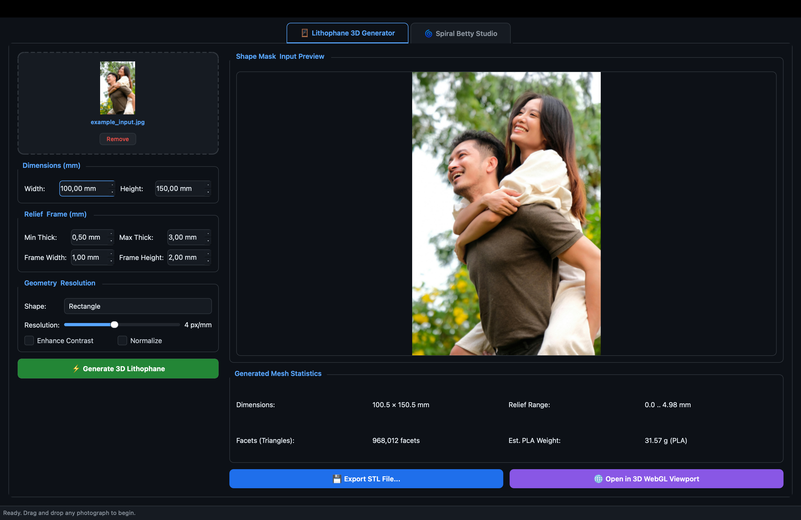
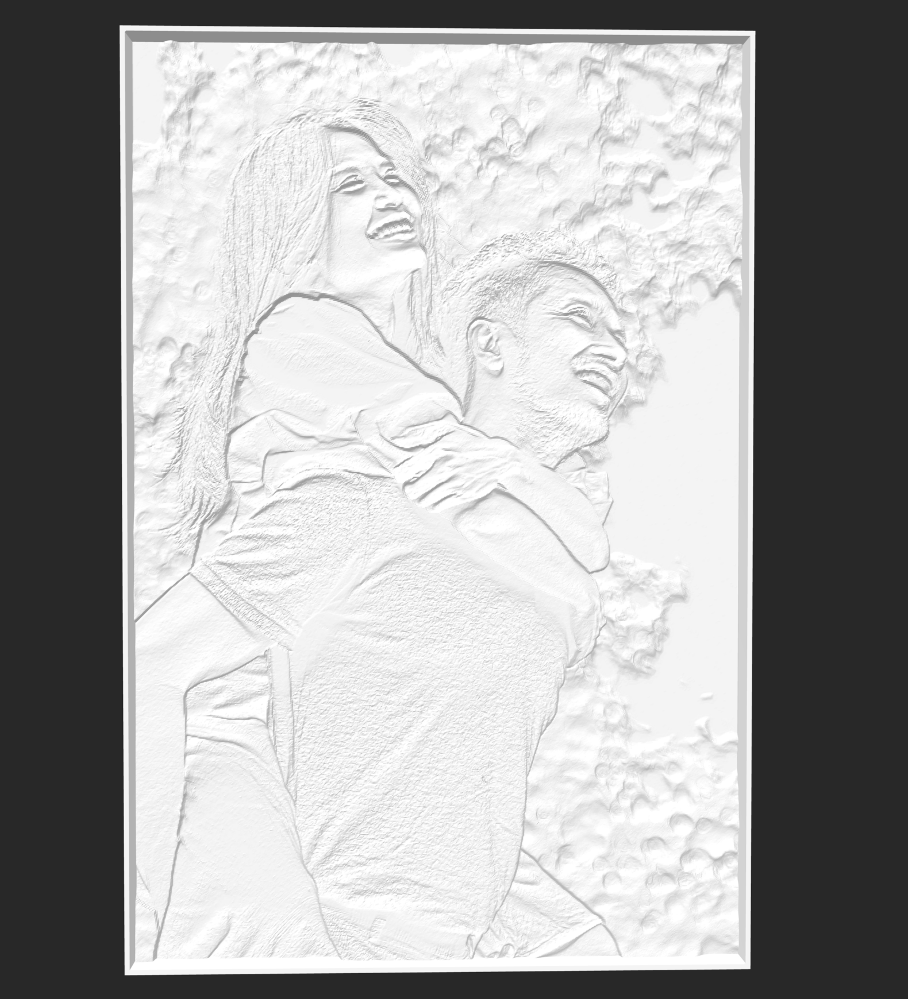
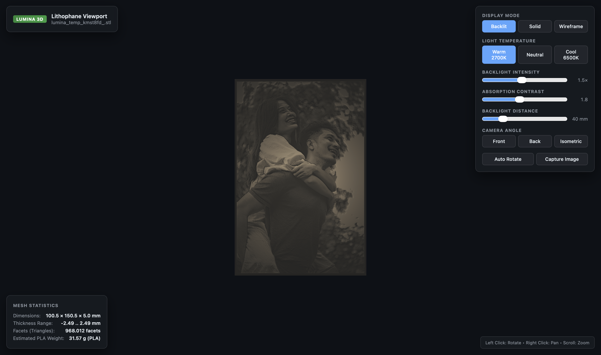

Vektörize Mesh Algoritması
NumPy tabanlı grid hesaplamalarıyla pikseller doğrudan 3D koordinatlara haritalanır. Yüzbinlerce üçgenden oluşan yüksek yoğunluklu mesh yüzeyleri, Python döngülerine takılmadan saniyeler içinde oluşturulur.
Açık Kaynak 3D Baskı Stüdyosu
Fotoğraflarınızı dilimleyiciye hazır, su sızdırmaz 3D litofan modellerine (STL ve OBJ) çevirin. İster modern macOS masaüstü stüdyosuyla görsel çalışın, ister terminalden otomatikleştirin.
pip install lumina-studio

Kaydırıcıyı sürükleyerek veya altındaki kontrolü kullanarak orijinal fotoğraf ile üretilen katı litofan derinlik modeli arasındaki geçişi inceleyin.

Standart görüntü dönüştürücülerinin aksine Lumina, doğrudan dilimleyici gereksinimlerini karşılayan manifold katı gövdeler inşa eder.
NumPy tabanlı grid hesaplamalarıyla pikseller doğrudan 3D koordinatlara haritalanır. Yüzbinlerce üçgenden oluşan yüksek yoğunluklu mesh yüzeyleri, Python döngülerine takılmadan saniyeler içinde oluşturulur.
Kişisel fotoğraflarınız asla üçüncü taraf sunuculara veya bulut servislerine iletilmez. Tüm piksel işleme ve mesh üretimi kendi bilgisayarınızda yerel olarak gerçekleşir.
Dikdörtgen, Dairesel, Kalp ve Spiral şekil stratejileri. Görselin odak noktasını koruyarak kenarlarda zarif ve baskıya dayanıklı çerçeve geçişleri uygular.
Faset detaylarını, ışık geçirgenliğini ve arka ışık açılarını baskı öncesinde interaktif olarak döndürün, yakınlaştırın ve denetleyin.

Dilimleyicide baskı hatası almadan ilk seferde kusursuz litofan üretmenin pratik yolu.
JPEG, PNG veya WEBP formatındaki fotoğrafı yükleyin. Lumina parlaklık değerlerini otomatik olarak analiz eder ve dinamik aralığı dengeler.
Min kalınlık (ışık geçiren en açık ton) ve max kalınlık (en koyu gölge) değerlerini milimetrik olarak belirleyin. Çerçeve genişliğini seçin.
Tek tıkla manifold (su sızdırmaz) katı gövde oluşturulur. STL veya OBJ olarak dilimleyiciniz için dışa aktarın.
Modeli yazıcı tablasına dikey yerleştirin. %100 dolgu (infill) ve 0.12mm katman yüksekliği ile opak beyaz PLA kullanarak basın.
İster bağımsız macOS masaüstü uygulamasını indirin, ister Python CLI ile terminalinize dahil edin.
Terminal bilgisi veya Python kurulumu gerektirmez. DMG dosyasını açın, Lumina'yı Applications klasörüne sürükleyin ve hemen kullanmaya başlayın.
Lumina-1.1.0-macos.dmg İndirBoyut: ~95 MB • macOS 12 Monterey ve daha yenisi • Apple Silicon ve Intel
Betiklerinizde veya sunucu iş akışlarınızda toplu litofan üretimi yapmak için pip ile yükleyin.
pip install lumina-studio
lumina create foto.jpg -o cikti.stl
| Platform | Destek Durumu | Minimum Donanım | Çıktı Formatları |
|---|---|---|---|
| macOS (Apple Silicon & Intel) | Resmi Standalone App (.dmg) + CLI | 4 GB RAM, macOS 12+ | STL, OBJ, PNG Preview |
| Linux (Ubuntu / Fedora / Arch) | Python CLI + Qt GUI (pip ile) | Python 3.10+, OpenGL 3.3 | STL, OBJ |
| Windows (10 / 11) | Python CLI + Qt GUI (pip ile) | Python 3.10+, 4 GB RAM | STL, OBJ |
3D yazıcı ile litofan basarken en sık karşılaşılan teknik konular.